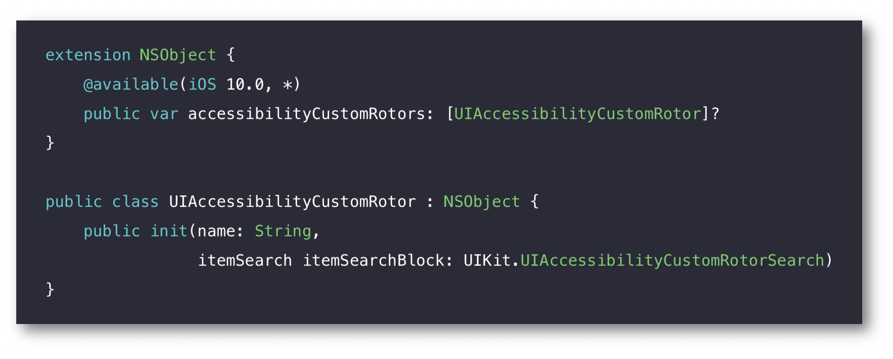

WWDC 2016 : What's New in Accessibility
This video available on the official Apple website (session 202) points out the new accessibility features and some reminders of good practices dealing mostly with VoiceOver.
 Various contents and their video timelapse are indicated hereunder :
Various contents and their video timelapse are indicated hereunder :
- Functionalities
- MOTOR - Switch Control (02:29)
- MOTOR - Dwell Control (03:36)
- VISION - Display adjustments (04:15)
- VISION - Taptic time (04:53)
- VISION - Magnifier (05:17)
- HEARING - TTY (06:51)
- LEARNING - Enhanced typing feedback (07:51)
- Programing
- UIAccessibilityProtocol (14:19)
- accessibilityElements (18:00)
- accessibilityFrameInContainerSpace (19:02)
- accessibilityCustomRotors (24:19)
- tvOS header elements (31:20)
- Example : during this presentation, the hereunder solutions for VoiceOver development pitfalls are suggested thanks to a simple application that's highly recommended to be watched before going further. Once implemented, these solutions give rise to an application whose VoiceOver efficiency is shown in a live demonstration.
- Activate a
table view cell(19:58). - Put a dynamic
labelon a button (20:21). - Make
CALayerelements accessible (used to create a graph for instance) (20:45). - Understand the navigation problems on a
mapviewwith VoiceOver (23:33). - Searching elements in a
table view(25:37) and in amapview(27:45) thanks to therotoritem.
- Activate a
Thereafter, the selection of a title will give rise to the video playback directly at the proper moment.
MOTOR - Switch Control (02:29)
After a brief reminder about this iOS functionality, a specific focus is invoked in this new tvOS feature.

MOTOR - Dwell Control (03:36)
Connected remote devices allow a user to control their mouse.
When the mouse dwells on a location, the Dwell Control feature displays a timer at the expiration of which an action is triggered (new MacOS feature).

VISION - Display adjustments (04:15)
People who are light sensitive or have color issues already use the MacOS and iOS supported features (inverted colors...) that are now available for tvOS.
VISION - Taptic time (04:53)
Introduced in WatchOS 3, this new VoiceOver feature includes a series of distinct taps to help people tell time silently and discretely.
VISION - Magnifier (05:17)
This new iOS 10 feature allows the device's camera to be used in order to magnify the user environment with many possible functionalities (steadiness, zoom, color filters...) whose efficiency is shown in a live demonstration.
HEARING - TTY (06:51)
The typewriter technology that allows to hold text conversations over standard telephone calls for someone with hearing loss is now available for iOS. This new iOS 10 feature is a software implementation that prevents from adding any additional TTY hardware while using this technology only with an iOS device.
LEARNING - Enhanced typing feedback (07:51)
Besides the improvements for Speech Selection and Speech Screen in the Accessibility - Speech part, an audio typing feedback has also been implemented.
This new iOS 10 feature helps people with dyslexia to catch and prevent mistakes in their writings, highlighted by a live demonstration.
UIAccessibilityProtocol (14:19)
Reminder on the UIAccessibility informal protocol fundamentals that will be used during the presentation.

accessibilityElements (18:00)
The implementation and the purpose of this element are explained and introduced inside the demo application.

accessibilityFrameInContainerSpace (19:02)
This new iOS 10 feature allows the automatic handling of the accessible element coordinates inside its container.

accessibilityCustomRotors (24:19)
Customed elements can be added to a native rotor thanks to this new iOS 10 feature.

The programming implementation of this feature is detailed in the development part.
tvOS header elements (31:20)
This last section deals with reminders of header elements implementation and purpose inside a VoiceOVer navigation with tvOS.